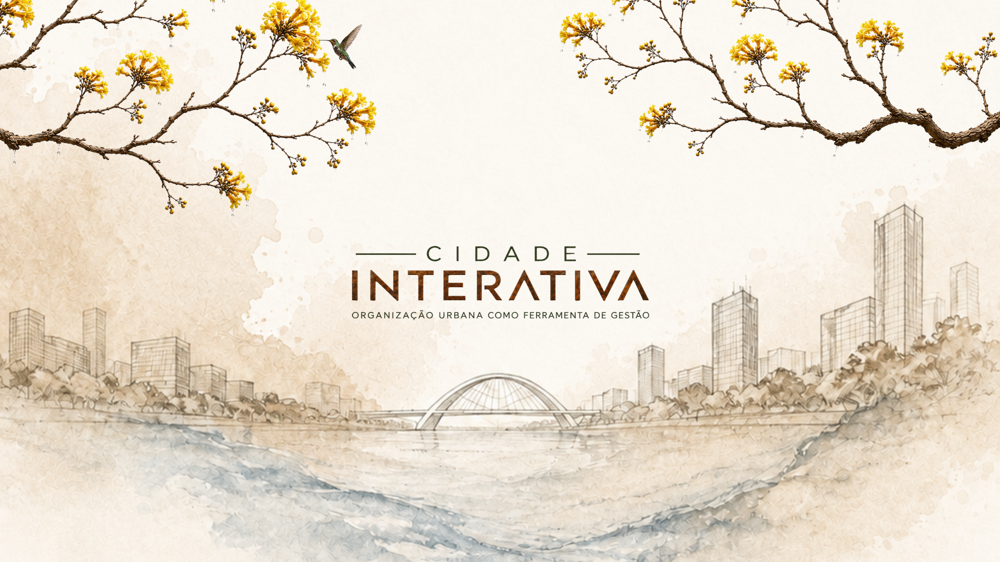
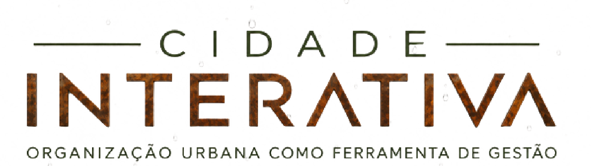
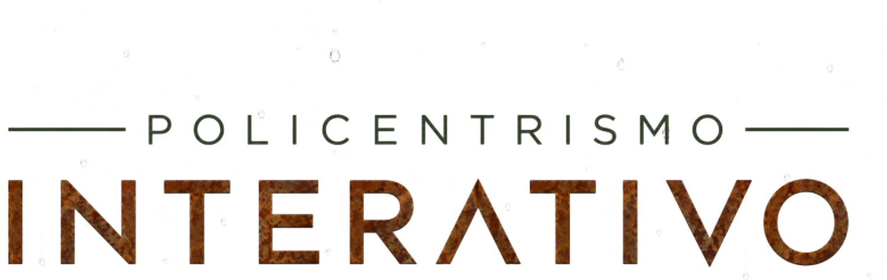
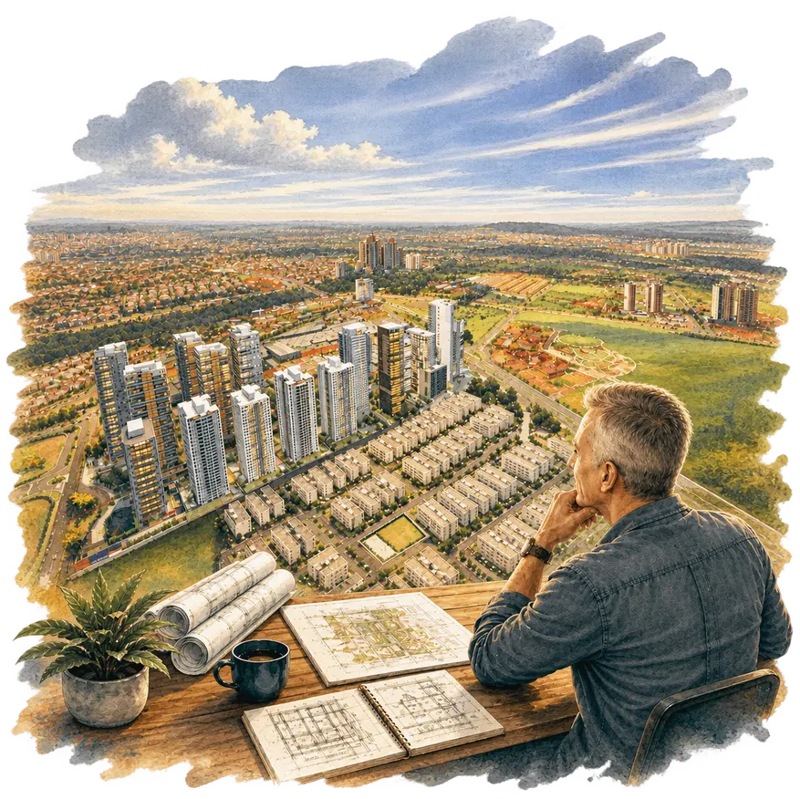
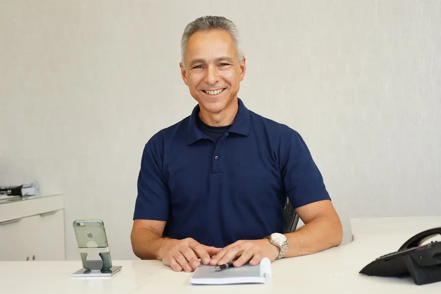
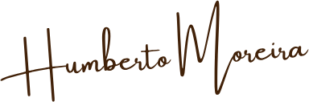

a
Gentileza Urbana
Princípio de colaboração: compreendida como tecnologia social e protocolo que viabiliza a integração da malha.


É um programa de interesse público municipal, com apoio institucional da Prefeitura Municipal de Uberlândia, formalizado por meio do Protocolo de Intenções SEDEI nº 02/2026.

É a tese central do programa: uma cidade só se torna efetivamente policêntrica quando seus polos detêm autonomia funcional e interoperabilidade sistêmica.
Conheça o programa ↓

Ao longo de 37 anos dedicados ao desenvolvimento urbano, compreendi que os maiores desafios das cidades não estão na falta de investimentos, mas na maneira como planejamos seu crescimento.
Durante 27 anos na Caixa Econômica Federal, atuei na formulação e execução de políticas públicas de alcance nacional. Posteriormente, na iniciativa privada, consolidei minha atuação como urbanista estratégico por mais de 10 anos e continuo seguindo esse caminho.
Essa trajetória despertou uma inquietação: como transformar o crescimento das cidades em prosperidade coletiva?
Foi essa pergunta que me levou a estudar e desenvolver o Policentrismo Interativo, uma nova visão sobre a organização urbana, e o Programa Cidade Interativa no qual o território é compreendido como um ativo estratégico.
Quando a cidade reconhece sua natureza, a prosperidade deixa de ser meta e se torna consequência.

Uma cidade só se torna policêntrica de verdade quando seus polos têm autonomia funcional e conversam entre si. Veja a diferença no movimento das pessoas.
Função predominantemente residencial — mantém a dependência do centro para emprego e serviços qualificados.
Proximidade de serviços essenciais — raramente estrutura polos de geração de riqueza e emprego em escala regional.
Proximidade com escala econômica: múltiplos polos que geram excedentes próprios, atraem investimento externo e movem a cidade inteira.
Bairros planejados e a Cidade de 15 Minutos foram avanços decisivos. O Centro Interativo vai além na escala e na estruturação econômica.
Princípio de colaboração: compreendida como tecnologia social e protocolo que viabiliza a integração da malha.
Comércio e serviços distribuídos ao longo de toda a malha urbana, aproximando as atividades cotidianas das pessoas e assegurando a autonomia funcional.
A geração de excedentes econômicos, sociais e culturais assegura a capacidade de troca e a sustentabilidade da malha urbana.
cidade-máquina → cidade-organismo
Da dependência à autonomia funcional, três princípios sustentam a transformação da organização urbana.
No Policentrismo Interativo, as forças de atração e expansão não se opõem entre centro e periferia: equilibram-se em toda a formação urbana, onde todo ponto é potencialmente central.
Da rotação das galáxias à dança dos elétrons, a matéria se organiza no embate de forças opostas. Nas cidades, é a tensão entre concentrar e espalhar.
A imensidão do quadrante. A cidade se manifesta inteira em cada quadrante — Norte, Sul, Leste e Oeste —, sem deixar margens ou periferias esquecidas.
As ondas de autonomia. Centralidade deixa de ser lugar e vira qualidade: a capacidade magnética de atrair fluxos, gerar encontros e resolver vidas — interconectados, no mesmo corpo de água.
A corrente social imaterial. O DNA de cada comunidade — saúde, tecnologia, educação, esporte, cultura. Não ocupa um lote: é a atmosfera que sintoniza as mentes.
A cidade real não é um alvo estático com um único ponto central que congestiona e exclui. Ela é um oceano vivo — um ecossistema contínuo, onde o desenvolvimento não se fixa em coordenadas: flui.
Seis núcleos opcionais e um essencial. Cada um materializado em um Parque, com vocação, diretrizes e programa de incentivo próprios — todos fundamentados no uso misto, na densidade equilibrada, na mobilidade ativa e na moradia universal.
Entre os sete Núcleos Vocacionais, o CONVIVA é condição essencial para os demais. Uma centralidade pode nascer com uma, duas ou mais vocações, mas sem o CONVIVA, ela não se torna cidade.
Porque o ser humano é, antes de tudo, um ser sociável. É no CONVIVA que as gerações se encontram, onde a criança brinca, o jovem estuda, o adulto trabalha e o idoso é respeitado.
O CONVIVA é a base humana do Policentrismo Interativo.
O livro apresenta o Programa Cidade Interativa, uma proposta de gestão urbana fundamentada nos princípios do Policentrismo Interativo, que compreende o território como um ativo estratégico para o desenvolvimento econômico e social das cidades.
Por meio da organização territorial em centralidades planejadas, o Programa propõe descentralizar a geração de valor, ampliar a autonomia das regiões e otimizar os investimentos públicos e privados, promovendo uma gestão urbana mais eficiente e uma melhor qualidade de vida para a população.
Entre em contato para conhecer melhor o Programa Cidade Interativa, esclarecer dúvidas ou conversar sobre oportunidades de colaboração.